signal <- function(t, pars, rad=FALSE) {
stopifnot(is.data.frame(pars))
if (!rad) {
pars$phi <- pars$phi/180*pi
pars$f <- 2*pi*pars$f
}
with(
pars,
map_dbl(t, \(t) map_vec(seq_along(w), ~ w[.]*sin(t*f[.]+phi[.])) %>% sum())
)
}Filtri
1 Impiego della Funzione di trasferimento per l’elaborazione dei segnali: Filtraggio in frequenza
Un sistema dinamico lineare per il quale esiste una funzione di trasferimento sinusoidale può rappresentare diverse cose:
- un elemento che elabora segnali: la funzione di trasferimento non è utile solo per la soluzione di equazioni differenziali che divengo semplici equazioni algebriche, ma anche per effettuare elaborazioni sulle componenti armoniche di un generico segnale e prevedere quali armoniche conterrà l’uscita in base al suo diagramma di Bode. Tali blocchi di elaborazione possono servire per ridurre il rumore in alta frequenza (filtri passa basso), quello in bassa (filtri passa alto), etc;
- uno strumento di misura: la funzione di trasferimento in questo caso descrive come lo strumento modifica le componenti armoniche di un segnale da misurare (misurando) e prevedere quali armoniche conterrà l’uscita dello strumento in base al suo diagramma di Bode. Va da sé che uno strumento ideale dovrebbe far passare tutte le armoniche del misurando inalterate. Ovvero né alterate in ampiezza e neppure sfasate. In questo modo esiste una corrispondenza esatta (a meno di un fattore di conversione proporzionale) tra uscita e misurando in ingresso. Questo a volte è possibile, a volte no. Come vedremo, se uno strumento è particolarmente ‘lento’, esso distorcerà significativamente le ampiezze e sfaserà altrettanto significativamente le fasi delle componenti armoniche tanto più si va su in frequenza. In questi casi, per stimare correttamente il misurando, occorre invertire la funzione di trasferimento in una procedura analoga a quella vista per l’operazione di misura di una grandezza statica. Questa procedura può essere definita Compensazione Dinamica che vedremo in uno dei prossimi paragrafi.
1.1 Esempio di riduzione del rumore in alta frequenza su di un segnale di temperatura
Si consideri il segnale ed il modulo del suo spettro mostrate in Figura 1 (una misura di temperatura tramite PT100 su di una piastra termostatata che regola la temperatura tra due valori soglia). Se il segnale viene posto in ingresso ad un sistema che possiede una funzione di trasferimento passa basso, si ottiene un segnale in uscita con le medesime componenti in bassa frequenza mentre quelle in alta sono attenuate.

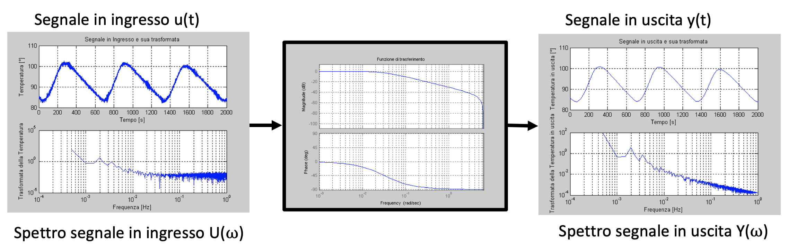
È possibile notare che il segnale in uscita non mostra più il rumore originario in alta frequenza in quanto la funzione di trasferimento ha attenuato proprio le componenti armoniche ad alta frequenza che non appartenevano ad un andamento di temperatura. La dinamica termica è infatti generalmente ‘lenta’. Appartenevano, ad esempio, al rumore elettromagnetico di natura interferente.
Le tipologie di filtri sono dette
- passa-basso nel caso in cui vengano mantenute le componenti a bassa frequenza ed eliminate quelle ad lata frequenza;
- passa-alto nel caso contrario;
- passa-banda nel caso in cui vengano lasciate immutate le componenti appartenenti ad una data frequenza ed eliminate le altre;
- elimina-banda nel caso opposto.
L’ordine del filtro coincide con l’ordine del sistema lineare corrispondente al filtro e definisce, nel diagramma di Bode, la pendenza di modulo(espresso nel diagramma logaritmico in decibel per decade) ed andamento della fase. Altro parametro importante è la frequenza di taglio \(f_c\) definita come quella frequenza alla quale il segnale viene distorto in modo trascurabile, quindi:
- la massima attenuazione (o amplificazione) della potenza delle armoniche è pari al 50%, ovvero l’ampiezza viene attenuata di un fattore uno su radice di due, in termini logaritmici quindi \(\pm 3\) dB;
- lo sfasamento è pressoché lineare (introducendo eventualmente un ritardo ma non una distorsione). A tale conclusione si arriva considerando la proprietà dell’anticipo-ritardo della trasformata.
Alla frequenza di taglio corrisponde implicitamente una banda passante che sarà da 0 ad \(f_c\) nel caso di passa basso, da \(f_c\) ad infinito nel caso di passa alto.
2 Filtri online
Il filtro online opera direttamente sul segnale temporale elaborandolo mano mano che esso si presenta, campione dopo campione tramite una successione per ricorrenza. La dimostrazione del fatto che un sistema reale si comporta nel dominio discreto come una successione per ricorrenza la si ottiene:
- moltiplicando la trasformata di un segnale d’ingresso per la funzione di trasferimento
- antitrasformando
- discretizzando la derivata
Proviamo quanto detto con un filtro del primo ordine avente uno zero ed un polo:
Sappiamo che: \[ Y(\omega) = \frac{1+i\omega\tau_N}{1+i\omega\tau_D}U(\omega) \] da cui: \[ Y(\omega)(1+i\omega\tau_D) = U(\omega)(1+i\omega\tau_N) \] quindi: \[ Y(\omega)+i\omega\tau_DY(\omega)=U(\omega)+i\omega\tau_nU(\omega) \]
Anti-trasformando otteniamo: \[ y(t) + \dot y(t)\tau_D=u(t)+\dot u(t)\tau_N \] e applicando la formula di Eulero per la discretizzazione (anche conosciuta come formula alle differenze finite): \[ y_k+\frac{y_k-y_{k-1}}{T_c}\tau_D=u_k\frac{u_k-u_{k-1}}{T_c}\tau_n \] e, in definitiva: \[ y_k\left(1+\frac{\tau_D}{T_c}\right) = y_{k-1}\frac{\tau_D}{T_c}+ u_k\left(1+\frac{\tau_N}{T_c}\right) - u_{k-1}\frac{\tau_N}{T_c} \] che, normalizzando, diventa la seguente ricorrenza: \[ y_k=y_{k-1}\frac{\tau_D/T_c}{1+\tau_D/T_c} + u_k\frac{\tau_N/T_c}{1+\tau_D/T_c}+u_{k-1}\frac{\tau_N/T_c}{1+\tau_D/T_c} \]
Che significato assumono in R i vettori A e B?
Se \(n_a\) è l’ordine del denominatore ed \(n_b\) è l’ordine del numeratore, \(A = [A(1), A(2),\dots, A(n_a+1)]\), \(B = [B(1), B(2),\dots, B(n_b+1)]\): \[ \begin{aligned} a(1)y(n) =& b(1)x(n) + b(2)x(n-1) + \dots + b(n_b+1)x(n-n_b) + \\ &- a(2)y(n-1)-\dots-a(n_a+1)y(n-n_a) \end{aligned} \]
Grazie alla normalizzazione, si impone \(a(1)=1\)
Nel caso sopra citato della funzione di trasferimento con un polo ed uno zero del primo ordine i vettori A e B sono: \[ \begin{aligned} A &= \left[ 1\quad -\frac{\tau_D/T_c}{1+\tau_D/T_c}\right] \\ B &= \left[ \frac{1+\tau_N/T_c}{1+\tau_D/T_c} \quad -\frac{\tau_N/T_c}{1+\tau_D/T_c}\right] \end{aligned} \]
Notare che essendo \(n_a = n_b = 1\) entrambi i vettori hanno 2 elementi.
In R il comando butter(n, fn) restituisce i coefficienti della funzione di trasferimento di un filtro Butterworth digitale passa basso di ordine \(n\) in grado di operare in tempo reale con frequenza di taglio normalizzata alla frequenza di Nyquist \(f_n\).
La frequenza di taglio per filtri digitali, ovvero filtri che elaborano sequenze di segnali campionati e convertiti viene solitamente normalizzata per la frequenza di Nyquist. Il motivo è semplice: un vettore corrispondente ad un segnale digitale non possiede esplicitamente informazioni circa la frequenza di campionamento per cui ha senso normalizzare il suo massimo contenuto in frequenza (ponendo quindi la fn pari ad 1) ed esprimendo i parametri di elaborazione (quali ad esempio il filtraggio) rispetto a tale valore, quindi tra 0 ed 1.
Si noti come, perdendo l’informazione circa la frequenza o tempo di campionamento è possibile ragionare equivalentemente in termini di numeri di campioni. Per la frequenza di Nyquist ad esempio l’armonica corrispondente ha 2 campioni: \(f_c = 1 / 1\) campione, quindi \(f_n = fc / 2 = 1 / 2\) campioni, ovvero periodo 2 campioni.
2.1 Esempi
Riutilizziamo la funzione signal():
Definiamo una sinusoide base con due disturbi armonici, più un disturbo normale:
N <- 100
pars <- tibble(
w = c(1, 0.1, 0.3),
f = c(1/25, 1/5, 1/3),
phi = c(0, 0, 0)
)Cominciamo con realizzare il grafico del segnale e delle sue componenti:
s <- tibble(
t = 0:N,
s = signal(t, pars[1,]),
y = signal(t, pars),
yn = y + rnorm(length(t), 0, pars$w[1] / 10)
)
s %>%
select(t, sine=s, signal=y, `signal+noise`=yn) %>%
pivot_longer(-t) %>%
ggplot(aes(x=t, y=value)) +
geom_line(aes(color=name)) +
labs(x="time (s)")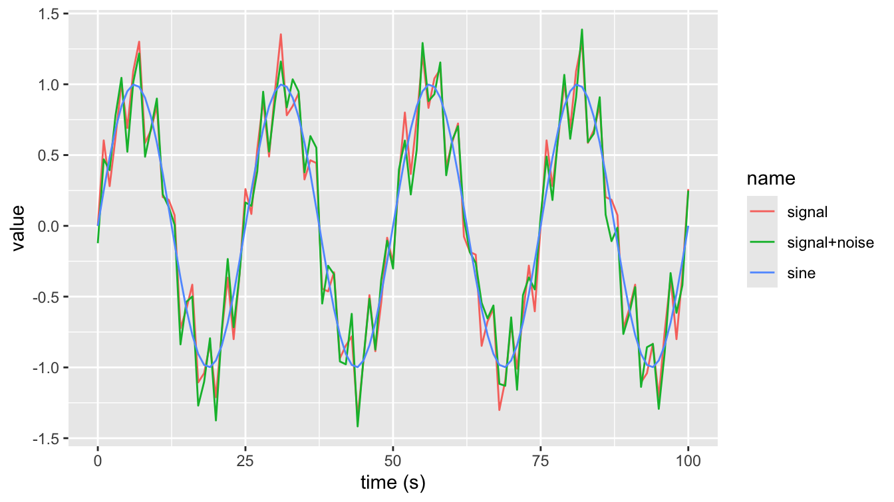
La trasformata di Fourier mostra i tre picchi attesi:
s %>%
mutate(
f = 0:(n()-1)/max(t),
fft = fft(yn),
intensity = Mod(fft) / n()*2,
phase = Arg(fft)/pi*180
) %>%
slice_head(n=as.integer(nrow(.)/2)) %>%
ggplot(aes(x=f, y=intensity)) +
geom_spoke(aes(y=0, radius=intensity, angle=pi/2)) +
geom_point()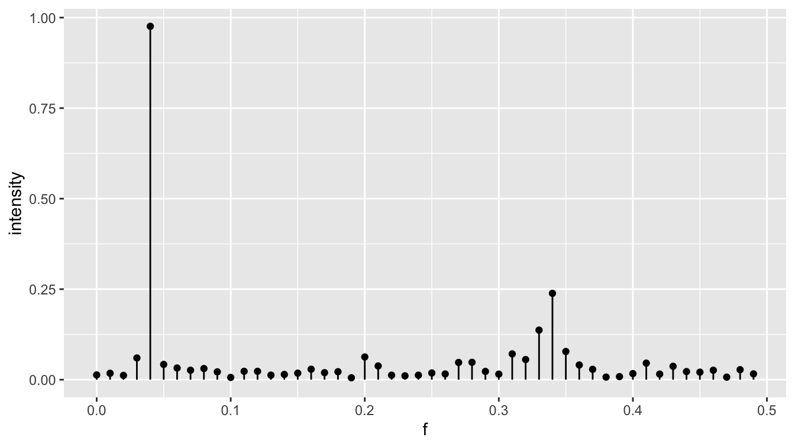
Il filtraggio online viene realizzato in due passi: prima si progetta il filtro, selezionando il tipo di filtro e i parametri che si adattano al segnale che si vuole filtrare e alla sua trasformata nel dominio delle frequenze, poi si applica il filtro al segnale.
Nel nostro caso scegliamo un filtro di tipo Butterworth di ordine 3:
ft <- 2/pars$f[1] / (1/2)
# Doppio della frequenza base
fn <- pars$f[1]*2
# Frequenza di Nyquist
fny <- 1/(s$t[2] - s$t[1]) / 2
# Frequenza di taglio
ft <- fn/fny
# Filtro Butterworth di ordine 3 con cut-off al doppio della frequenza base
# Il parametro w è normalizzato tra 0 e 1, con 1 = fny
flt <- butter(3, w=ft)
flt$b
[1] 0.01018258 0.03054773 0.03054773 0.01018258
$a
[1] 1.0000000 -2.0037975 1.4470540 -0.3617959
attr(,"class")
[1] "Arma"Come si vede, l’oggetto filtro contiene i due vettori coi coefficienti polinomiali di un modello ARMA.
La funzione freqz() consente di valutare le caratteristiche del filtro:
(fq <- freqz(flt))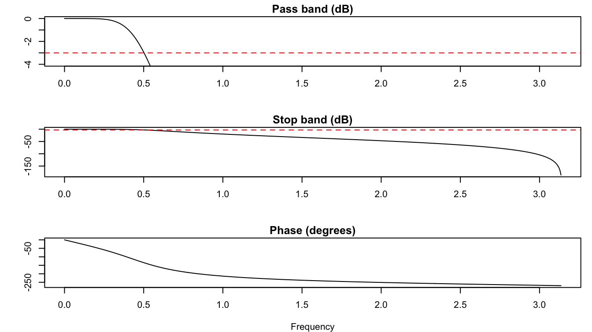
Il grafico Stop band è lo stesso grafico Pass band ma con limiti dell’asse y più ampi, in modo da evidenziare come poco oltre 3 Hz c’è un’attenuazione completa.
Grafici simili possono essere ottenuti in ggplot come segue, estraendo direttamente le componenti dall’oggetto restituito da freqz. Si noti che la componente fq$h va scomposta in modulo e fase; il modulo va poi convertito in decibel (dB) e la fase va “srotolata” (unwrap):
tibble(
h = fq$h,
mod = 20*log10(Mod(h)),
phase = Arg(h) %>% unwrap() / pi * 180,
frequency = fq$w,
) %>% {
(ggplot(., aes(x=frequency)) +
geom_line(aes(y=mod)) +
coord_cartesian(ylim=c(-4, 0.5)) +
geom_vline(xintercept=ft, color="red", linetype=2) +
labs(y="Intensity (dB)", x="")) /
(ggplot(., aes(x=frequency)) +
geom_line(aes(y=phase)) +
geom_vline(xintercept=ft, color="red", linetype=2) +
labs(y="phase (°)", x="frequency (Hz)"))
}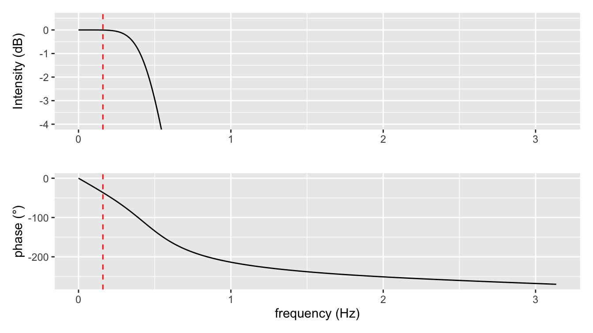
Il filtro può poi essere applicato con filter():
s %>%
mutate(
sflt = flt %>% filter(yn)
) %>%
select(t, `signal+noise`=yn, sine=s, filtered=sflt) %>%
pivot_longer(-t) %>%
ggplot(aes(x=t, y=value)) +
geom_line(aes(color=name)) +
labs(x="time (s)")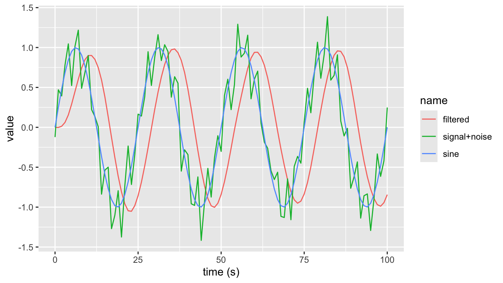
Come si vede, il filtro ripulisce sia il disturbo casuale che le armoniche con frequenza superiore alla frequenza di taglio 0.16 Hz., seppure introducendo un ritardo di fase.
Per eliminare il ritardo, se il filtro è applicato offline, si può ricorrere a filtfilt() al posto di filter(): questa funzione applica il filtraggio in avanti e indietro, compensando quindi il ritardo:
s %>%
mutate(
sflt = flt %>% filtfilt(yn)
) %>%
select(t, `signal+noise`=yn, sine=s, filtered=sflt) %>%
pivot_longer(-t) %>%
ggplot(aes(x=t, y=value)) +
geom_line(aes(color=name)) +
labs(x="time (s)")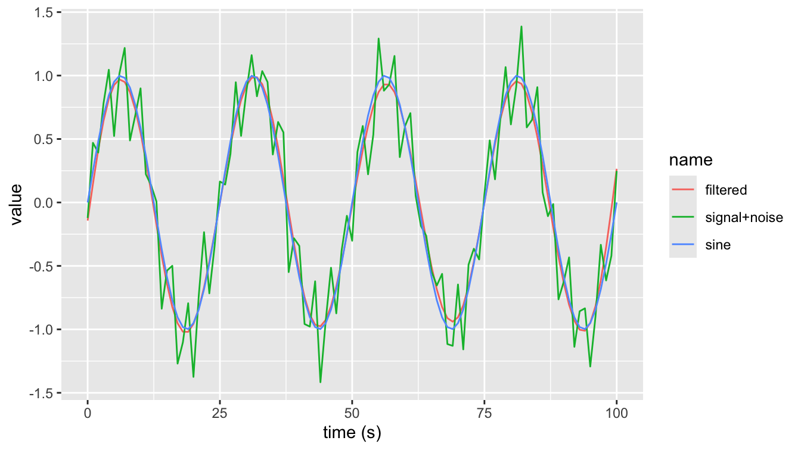
2.2 Ricorsione
Il vantaggio dei filtri online è che possono essere calcolati direttamente durante l’acquisizione di un segnale, grazie al fatto che il filtro è esprimibile come una formula di ricorsione.
La funzione butter() restituisce infatti un filtro in forma dei coefficienti di un modello \(\mathrm{ARMA}(p, q)\), per cui è possibile calcolare la nuova osservazione filtrata \(y_n\) in funzione delle precedenti osservazioni:
\[ a_1 y_n + a_2y_{n-1} + \dots + a_{n_a}y_{n-p+1} = b_1x_n + b_2 x_{n-1} + \dots + b_{n_b}x_{n-q+1} \]
dove le \(y_i\) sono i valori filtrati, le \(x_i\) i valori originari, e i due vettori A e B contengono i termini \(a_i\) e \(b_i\), con \(a_1 = 1\). Quindi:
\[ y_n = b_1x_n + b_2 x_{n-1} + \dots + b_{n_b}x_{n-n_b+1} - \left(a_2y_{n-1} + \dots + a_{n_a}y_{n-n_a+1}\right) \tag{1}\]
Per un filtro Butterworth di ordine \(m\), si ha che \(p=q=m\) e i vettori A e B hanno entrambi \(m+1\) elementi.
È facile implementare la Equazione 1 in un qualsiasi linguaggio di programmazione. Ad esempio in R definiamo una funzione che prende in ingresso una tabella, una nuova osservazione e il filtro (con le componenti ARMA \(A\) e \(B\)), e restituisce la stessa tabella con una riga in più (con il nuovo campione e il valore filtrato con la Equazione 1). L’inizializzazione della formula ricorsiva viene fatta con una tabella vuota (o NA):
my_filter <- function(t = NA, sample, flt) {
# Inizializzazione o aggiornamento tabella:
if (!is.data.frame(t) || nrow(t) == 0)
t <- tibble(i=1, x=sample, y=0)
else
t <- add_row(t, i = tail(t, 1)$i + 1, x=sample)
A <- flt$a
B <- flt$b
n <- nrow(t)
nb <- min(n, length(B))
# Termini Moving Average:
MA <- rev(B[1:nb]) * tail(t$x, nb)
# Termini Auto-Regressive:
AR <- rev(A[1:nb]) * tail(t$y, nb)
# Nuova osservazione filtrata:
t$y[n] <- sum(MA) - sum(AR, na.rm=TRUE)
return(t)
}In questo modo il filtro può essere applicato un’osservazione alla volta, e per questo si chiama filtro online: può cioè essere aggiornato durante l’acquisizione del segnale, pena ovviamente un ritardo sul segnale filtrato:
tibble() %>%
my_filter(1, flt) %>%
my_filter(2, flt) %>%
my_filter(3, flt) %>%
my_filter(4, flt) %>%
my_filter(5, flt) %>%
my_filter(5, flt) %>%
my_filter(5, flt) %>%
kable()| i | x | y |
|---|---|---|
| 1 | 1 | 0.0101826 |
| 2 | 2 | 0.0713167 |
| 3 | 3 | 0.2503604 |
| 4 | 4 | 0.6058080 |
| 5 | 5 | 1.1625457 |
| 6 | 5 | 1.8998389 |
| 7 | 5 | 2.7409252 |
Utilizziamolo sul segnale originale è più evidente il ritardo:
filtered_signal <- tibble()
for (sample in s$yn) {
filtered_signal <- my_filter(filtered_signal, sample, flt)
}
filtered_signal %>%
ggplot(aes(x=i)) +
geom_line(aes(y=y), color="red") +
geom_line(aes(y=x))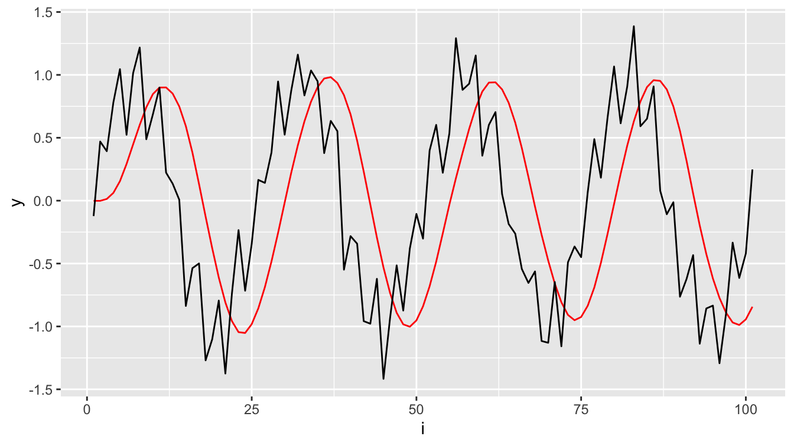
my_filter()Sfruttando la programmazione funzionale di purrr:
s$yn %>%
reduce(\(tbl, obs) my_filter(tbl, obs, flt), .init=tibble()) %>%
ggplot(aes(x=i)) +
geom_line(aes(y=y), color="red") +
geom_line(aes(y=x))my_filter(), usando purrr2.3 Filtri IIR e FIR
Tra i filtri online c’è un’importante differenza, che classifica filtri Infinite Impulse Response (IIR) e filtri Finite Impulse Response (FIR): considerando un impulso unitario:
\[ y(x)=\begin{cases} 0 & x < 0 \\ 1 & x \geqslant 0 \end{cases} \] le due classi di filtri si comportano come segue:
- IIR: sono filtri con memoria infinita: il valore filtrato dell’impulso mantiene memoria di ogni osservazione precedente e quindi non si stabilizza mai a 1 (seppure avvicinandosi sempre più). Corrispondono a filtri ARMA, in cui la parte AR ha un numero di coefficienti maggiore di uno;
- FIR: sono filtri con memoria limitata: dopo un numero di osservazioni pari alla memoria del filtro il valore filtrato è uguale a 1. Corrispondono a filtri MA (che ha memoria finita), un cui manca la parte AR (che ha memoria infinita).
Osserviamo la risposta al gradino dello stesso filtro flt sopra definito:
tibble(i=1:100, x=1) %>%
mutate(xf = filter(flt, x)) %>%
pivot_longer(-i, names_to = "signal") %>%
ggplot(aes(x=i)) +
geom_line(aes(y=value, color=signal)) 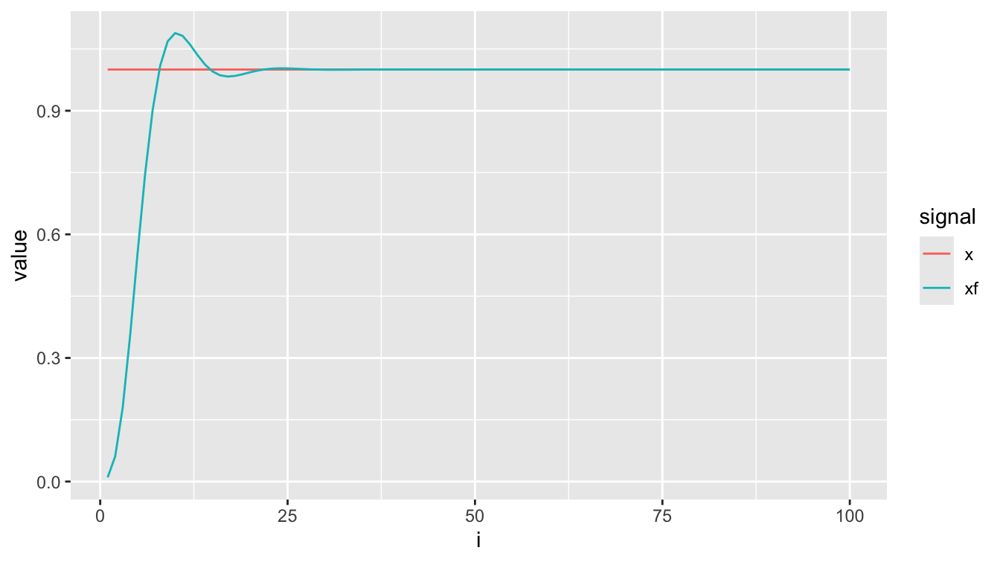
Se osserviamo un dettaglio della parte finale (i>80), possiamo verificare come in realtà il segnale filtrato non si stabilizzi mai a 1:
tibble(i=1:100, x=1) %>%
mutate(xf = filter(flt, x)) %>%
dplyr::filter(i>80) %>%
pivot_longer(-i, names_to = "signal") %>%
ggplot(aes(x=i)) +
geom_line(aes(y=value-1, color=signal)) +
scale_y_continuous(
n.breaks = 10,
labels = scales::label_scientific(digits=6)
)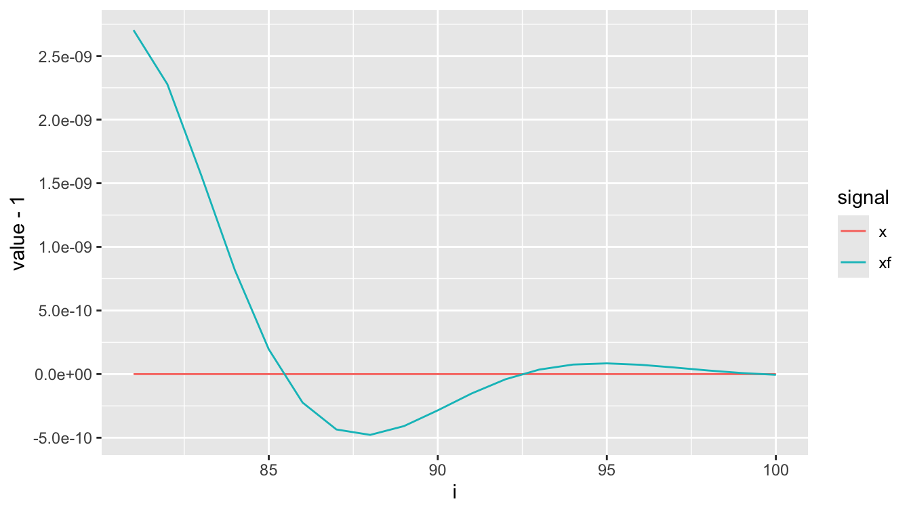
Attenzione: sia il pacchetto gsignal che dplyr (parte di tidyverse) forniscono una funzione filter(). Siccome gsignal è stato caricato dopo tidyverse, è necessario disambiguare la funzione desiderata premettendo il nome del pacchetto. Per questo motivo scriviamo dplyr::filter(i>80) anziché semplicemente filter(i>80).
Ora creiamo invece un filtro FIR di ordine 3, con la stessa frequenza di taglio, osservando come possa essere rappresentato da un modello MA con 4 termini (3+1):
(flt_fir <- fir1(3, w=ft))[1] 0.04355854 0.45644146 0.45644146 0.04355854
attr(,"class")
[1] "Ma"Le caratteristiche del filtro sono le seguenti:
freqz(flt_fir)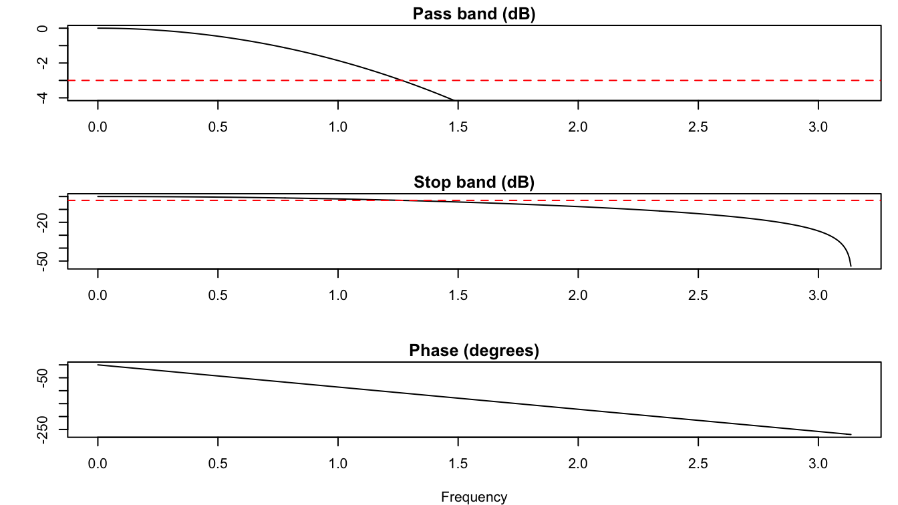
Si noti, in particolare, che la fase è lineare: ciò è un vantaggio perché può essere facilmente utilizzata per compensare il ritardo, come si vedrà più sotto.
La risposta al gradino è la seguente, notando che dopo tre osservazioni il filtro è identico al segnale:
tibble(i=1:100, x=1) %>%
mutate(xf = filter(flt_fir, x)) %>%
pivot_longer(-i, names_to = "signal") %>%
ggplot(aes(x=i)) +
geom_line(aes(y=value, color=signal)) 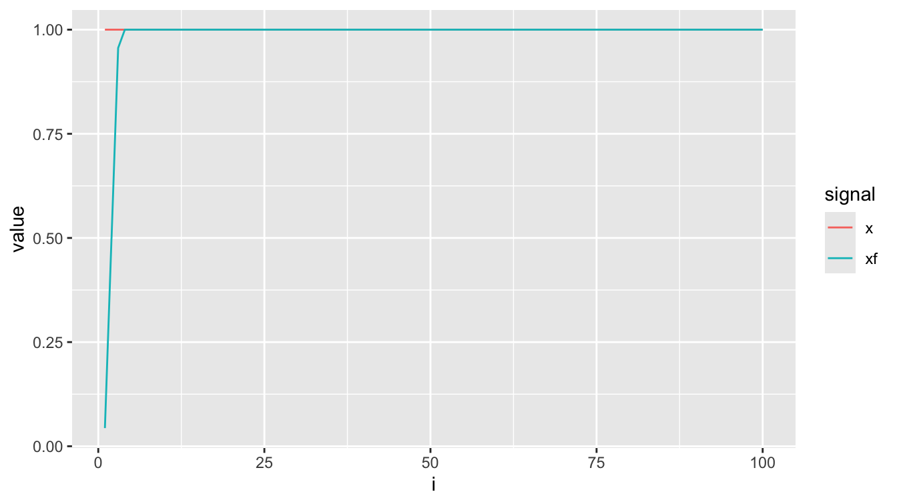
Vediamo come si comporta un filtro FIR sul segnale armonico di riferimento. Anzitutto notiamo come la caratteristica del filtro FIR sia meno aggressiva del filtro IIR a parità di banda e di ordine. Pertanto utilizziamo un filtro di ordine superiore:
flt_fir <- fir1(6, w=ft)
s %>%
mutate(
sflt = flt_fir %>% filter(yn)
) %>%
select(t, `signal+noise`=yn, sine=s, filtered=sflt) %>%
pivot_longer(-t) %>%
ggplot(aes(x=t, y=value)) +
geom_line(aes(color=name)) +
labs(x="time (s)")Dato che il ritardo di fase è lineare, è facile compensarlo: la funzione grpdelay() valuta il ritardo, e la funzione lead() (cioè lag() per ritardi negativi) lo compensa:
flt_fir <- fir1(6, w=ft)
delay <- grpdelay(flt_fir)$gd %>% mean() %>% round() %>% as.integer()
s %>%
mutate(
sflt = flt_fir %>% filter(yn),
sflt_nd = sflt %>% lead(delay)
) %>%
select(t, `signal+noise`=yn, signal=s, `filtered nd`=sflt_nd) %>%
pivot_longer(-t) %>%
ggplot(aes(x=t, y=value)) +
geom_line(aes(color=name)) +
labs(x="time (s)")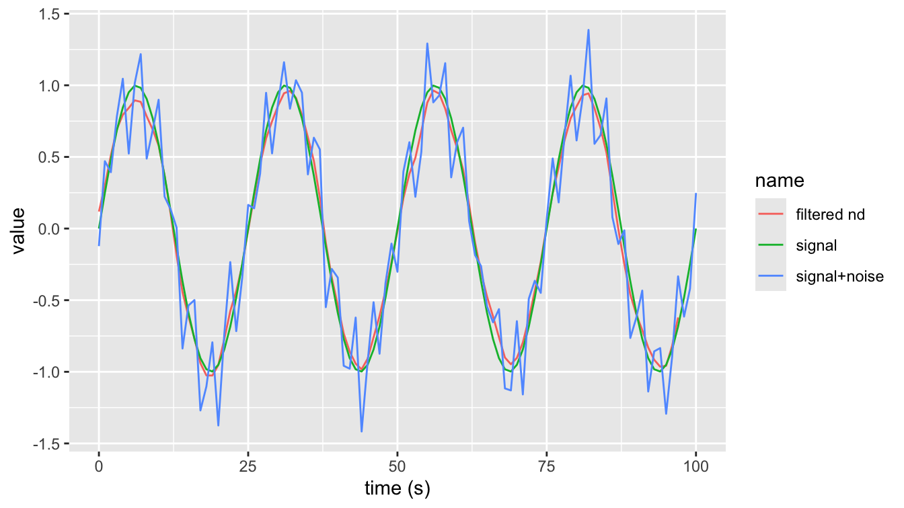
Ovviamente, la compensazione del ritardo rende un filtro FIR offline: se così non fosse, ci consentirebbe di conoscere il futuro.
2.4 Stabilità
Come abbiamo visto un filtro può essere rappresentato come un processo ARMA. In quanto tale, può presentare problemi di stabilità. Un filtro è detto stabile se la sua risposta al gradino decade a zero indefinitamente, e viceversa.
Per verificare la stabilità di un filtro lo si converte in formato zero-pole-gain, un formato che rappresenta il filtro come radici dei polinomi al numeratore della funzione di trasferimento (zeroes) e come radici del polinomio al denominatore (poles):
# poles
1/(polyroot(flt$a)) %>% zapsmall() %>% rev()[1] 0.5913983+0.0000000i 0.7061996+0.3362227i 0.7061996-0.3362227i# zeroes
1/(polyroot(flt$b)) %>% zapsmall() %>% rev()[1] -1+0i -1+0i -1+0iMediante gsignal è più semplice convertire il filtro in formato Zpg:
flt %>% as.Zpg()$z
[1] -1.0000016-2.850647e-06i -1.0000016+2.850647e-06i -0.9999967+0.000000e+00i
$p
[1] 0.5913984+0.0000000i 0.7061996-0.3362227i 0.7061996+0.3362227i
$g
NULL
attr(,"class")
[1] "Zpg"Un filtro è stabile quando tutti i poli sono all’interno del cerchio unitario sul piano immaginario:
circle <- function(r=1, x0=0, y0=0, n=100, phi = 0) {
tibble(
i = 0:n,
theta = i * 2*pi / n,
x = x0 + r*cos(theta + phi),
y = y0 + r*sin(theta + phi)
)
}
flt %>% as.Zpg() %>% {
tibble(
zr = Re(.$z),
zi = Im(.$z),
pr = Re(.$p),
pi = Im(.$p)
)} %>%
ggplot() +
geom_point(aes(x=zr, y=zi), shape=21) +
geom_point(aes(x=pr, y=pi), shape=4) +
geom_path(data=circle(), aes(x=x, y=y), color="red") +
coord_equal() +
labs(x="Real", y="Imaginary", title="Zero-Pole diagram")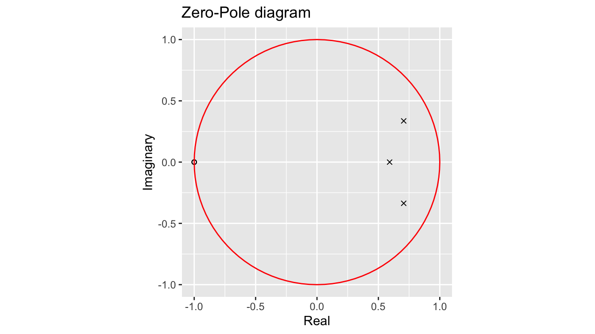
3 Filtri offline
Se non è necessario applicare il filtro durante l’acquisizione ma si può farlo ex-post, è possibile ricorrere alla trasformata di Fourier. Il processo è il seguente:
- Si calcola la FFT del segnale (senza applicare una finestra)
- Si definisce una funzione maschera che, moltiplicata per lo spettro, riduca o annulli le bande di frequenza che si desidera attenuare
- si calcola la trasformata inversa della trasformata moltiplicata per la maschera.
Vediamo ad esempio il caso di un segnale ottenuto da un elettrocardiogramma, con frequenza di 256 Hz per una durata di 10 s, disponibile nel data frame gsignal::signals:
signals %>%
mutate(
t = seq(0, 10, length.out=n()),
) %>%
ggplot(aes(x=t, y=ecg)) +
geom_line() +
labs(color="segnale", x="tempo (s)", y="tensione (µV)")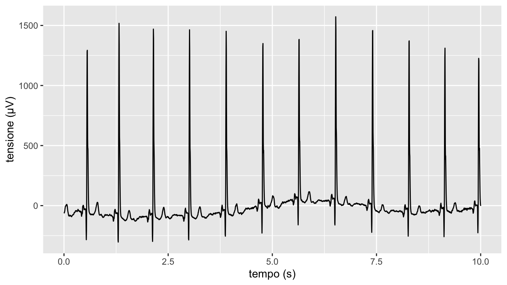
Osserviamo il modulo della trasformata: decidiamo di filtrare le frequenze sopra 10 Hz.
signals %>%
mutate(
i = (1:n())-1,
t = seq(0, 10, length.out=n()),
f = i / max(t),
fft = fft(ecg),
intensity = Mod(fft) / n() * 2
) %>%
ggplot(aes(x=f)) +
geom_line(aes(y=intensity)) +
scale_x_continuous(minor_breaks = scales::minor_breaks_n(11)) +
labs(x="frequenza (Hz)", y="tensione (µV)")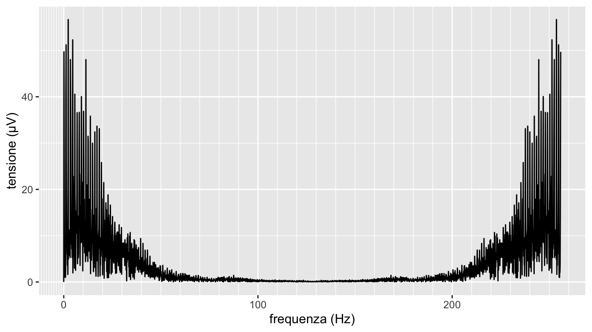
Per farlo definiamo una funzione filtro mediante una gaussiana dnorm() (anche se potremmo usare altre funzioni a piacere, a seconda del risultato desiderato). Si noti che la funzione maschera deve essere simmetrica attorno alla frequenza di Nyquist come lo è la trasformata.
width <- 8
off <- 0
sig <- signals %>%
mutate(
i = (1:n())-1,
t = seq(0, 10, length.out=n()),
f = i / max(t),
filter =
(dnorm(f, mean=off, sd=width) + dnorm(f, mean=max(f)-off, sd=width)) /
dnorm(0, mean=0, sd=width),
fft = fft(ecg),
fft_f = fft * filter,
intensity = Mod(fft) / n() * 2,
intensity_f = Mod(fft_f) / n() * 2,
phase = Arg(fft)/pi*180
)
sf <- 30
sig %>%
ggplot(aes(x=f)) +
geom_line(aes(y=intensity)) +
geom_line(aes(y=filter*sf), color="red") +
scale_x_continuous(minor_breaks = scales::minor_breaks_n(11)) +
scale_y_continuous(
sec.axis = sec_axis(~ . / sf, name = "filter")
)+
labs(x="frequenza (Hz)", y="tensione (µV)")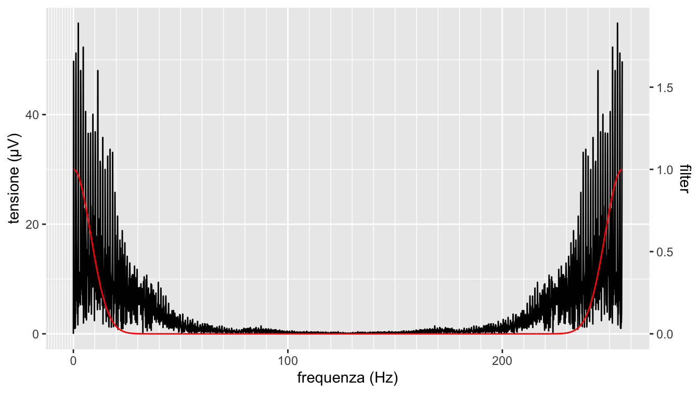
La funzione maschera è stata riscalata in modo da valere 1 al suo massimo. Inoltre, l’ultimo grafico riporta la maschera sul secondo asse verticale, per leggibilità.
La trasformata moltiplicata per la maschera risulta:
sig %>%
ggplot(aes(x=f)) +
geom_line(aes(y=intensity_f)) +
geom_line(aes(y=filter*sf), color="red") +
scale_x_continuous(minor_breaks = scales::minor_breaks_n(11)) +
scale_y_continuous(
sec.axis = sec_axis(~ . / sf, name = "filter")
)+
labs(x="frequenza (Hz)", y="tensione (µV)")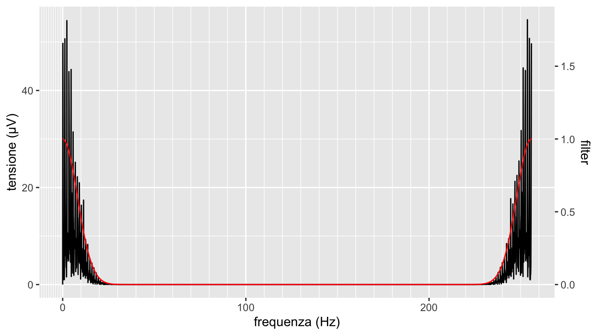
A questo punto possiamo anti-trasformare la trasformata mascherata, per ottenere il segnale filtrato e privo di ritardo:
sig %>%
mutate(
ecg_f = Re(ifft(fft_f))
) %>%
select(t, ECG=ecg, `ECG (filt.)`=ecg_f) %>%
pivot_longer(-t) %>%
ggplot(aes(x=t)) +
geom_line(aes(y=value, color=name)) +
coord_cartesian(xlim=c(0,2), ylim=c(-200, 200)) +
labs(color="segnale", x="tempo (s)", y="tensione (µV)")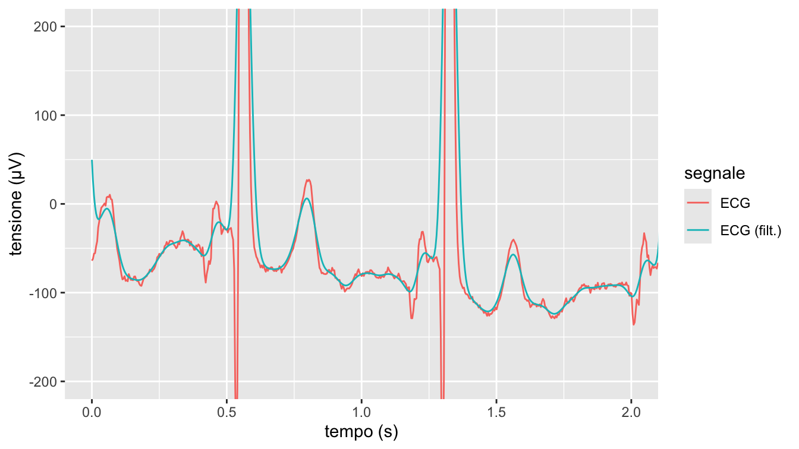
Si noti che la anti-trasformata restituisce un segnale complesso, per cui è necessario scartare la parte immaginaria.
ESERCIZIO: cambiare i valori di off e width per osservare come modificando la maschera cambia il segnale filtrato.
4 Taratura dinamica
4.1 Termocoppia
Consideriamo il caso di una sonda PT100 immersa repentinamente in un bagno termostatato. La temperatura della sonda raggiunge quella del bagno secondo la legge:
\[ T(t) = (T_i - T_f)e^{-\frac{t}{\tau}} + T_f \tag{2}\]
Sappiamo che \(T_i = 33.4\) °C, \(T_f = 95\) °C e stimiamo che l’immersione inizi a \(t_0 = 50\) s.
ggplot(temp, aes(x=t, y=T)) +
geom_line() +
geom_line(aes(y=Tn), color="red", linewidth=1/3) +
labs(x="tempo (s)", y="temperatura (°C)")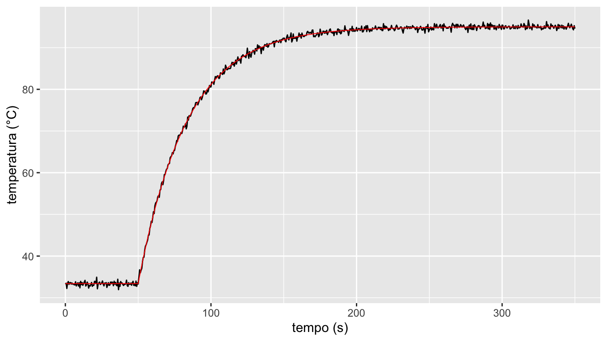
4.1.1 Primo metodo: intercetta
Secondo la Equazione 2, a \(t=\tau\) si ha che \(T(\tau) = (T_i-T_f)e^{-1} + T_f\), cioè:
\[\begin{align} T_f - T(\tau) &= (T_f - T_i)e^{-1} \\ &= (95 - 33.4) \cdot 0.368 \\ &= 61.6 \cdot 0.368 \\ &= 22.661 \end{align}\]
cioè \(T(\tau) = 72.339\) °C. In grafico:
Ttau <- Tf - (Tf - Ti)*exp(-1)
ggplot(temp, aes(x=t, y=T)) +
geom_line() +
geom_hline(yintercept = Ttau, color="blue") +
labs(x="tempo (s)", y="temperatura (°C)")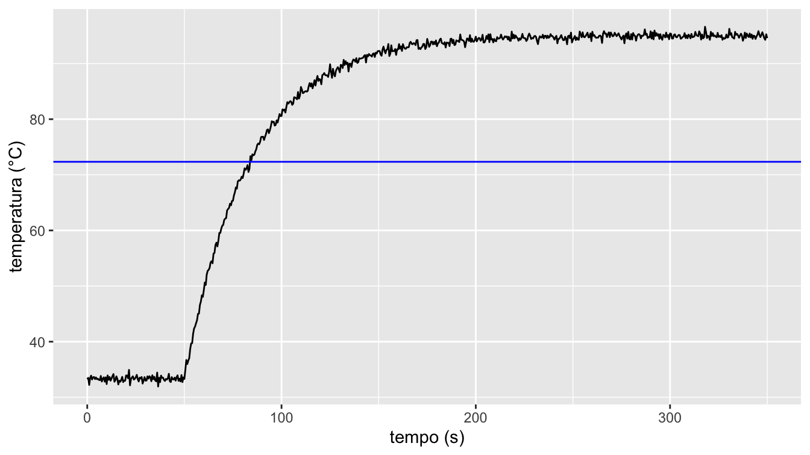
Cioè risulta graficamente che \(\tau\) è la distanza tra l’inizio del transitorio e l’intersezione con la linea blu. Sui dati:
temp %>%
select(t, T) %>% # solo le colonne t e T
mutate(t = t - 50) %>% # traslo i tempi all'inizio
dplyr::filter(T<Ttau) %>% # solo i valori < Ttau
slice_tail(n=1) %>% # prendo solo l'ultima riga
knitr::kable()| t | T |
|---|---|
| 33.5 | 71.0994 |
4.1.2 Secondo metodo: linearizzazione
La Equazione 2 può essere linearizzata così:
\[\begin{align} \frac{T(t) -T_f}{T_i - T_f} &= e^{-\frac{t}{\tau}} \\ \ln\left(\frac{T(t) -T_f}{T_i - T_f}\right) &= \ln(e^{-\frac{t}{\tau}}) \\ \ln\left(\frac{T(t) -T_f}{T_i - T_f}\right) &= -\frac{t}{\tau} \end{align}\]
Posso riorganizzare i dati come segue:
temp.l <- temp %>%
select(t, T) %>%
mutate(t = t - 50) %>%
dplyr::filter(t>0 & t < 100) %>%
mutate(y = log((T-Tf)/(Ti - Tf))) %>%
dplyr::filter(!is.nan(y))
temp.lm <- temp.l %>% lm(y~t-1, data=.)
temp.lm %>% summary()
Call:
lm(formula = y ~ t - 1, data = .)
Residuals:
Min 1Q Median 3Q Max
-0.254494 -0.023759 -0.004018 0.020228 0.253887
Coefficients:
Estimate Std. Error t value Pr(>|t|)
t -2.975e-02 7.284e-05 -408.5 <2e-16 ***
---
Signif. codes: 0 '***' 0.001 '**' 0.01 '*' 0.05 '.' 0.1 ' ' 1
Residual standard error: 0.05925 on 198 degrees of freedom
Multiple R-squared: 0.9988, Adjusted R-squared: 0.9988
F-statistic: 1.669e+05 on 1 and 198 DF, p-value: < 2.2e-16tau <- round(-1/temp.lm$coefficients, 1)
cat(paste("tau:", tau))tau: 33.6temp.l %>%
ggplot(aes(x=t, y=y)) +
geom_smooth(method="lm", formula = y~x-1) +
geom_point(size=0.5) +
labs(x="tempo (s)",
y=latex2exp::TeX("$\\log_{10}(\\frac{T-T_f}{T_i-T_f})$ (T in °C)"))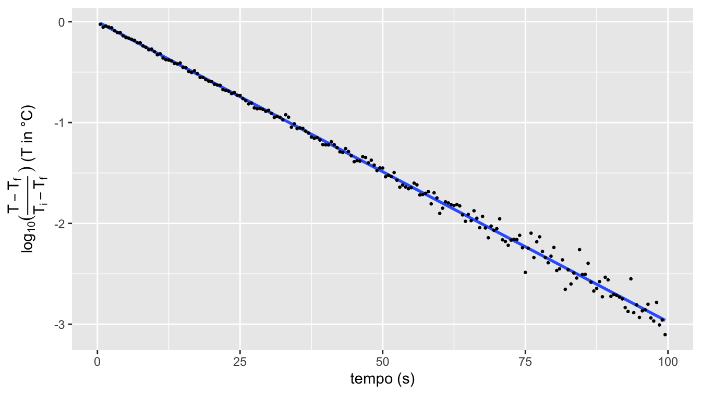
4.1.3 Terzo metodo: regressione non-lineare
Con il terzo metodo si usa la regressione non-lineare ai minimi quadrati per ottenere direttamente tutti e tre i parametri \(T_i, T_f, \tau\):
temp.l <- temp %>%
select(t, T) %>%
mutate(t = t - 50) %>%
dplyr::filter(t>0)
fit <- nls(T~(Ti - Tf)*exp(-t/tau) + Tf,
data = temp.l,
start = list(
Ti=30,
Tf=100,
tau=10
))
fitNonlinear regression model
model: T ~ (Ti - Tf) * exp(-t/tau) + Tf
data: temp.l
Ti Tf tau
33.58 95.00 33.65
residual sum-of-squares: 137.7
Number of iterations to convergence: 5
Achieved convergence tolerance: 1.104e-07temp.l %>%
modelr::add_predictions(fit, var="fit") %>%
ggplot(aes(x=t, y=T)) +
geom_line() +
geom_line(aes(y=fit), color="red", linewidth=1/4) +
labs(x="tempo (s)", y="temperatura (°C)")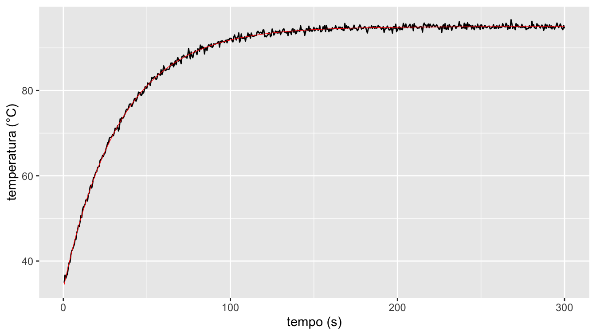
Si notino i valori iniziali approssimativi passati per i tre parametri.
I vantaggi di questo terzo metodo sono:
- non è necessario stimare soggettivamente \(T_i\) e \(T_f\), ma vengono identificati direttamente dalla regressione
- definendo il modello per parti (cioè costante per \(t<t_i\)), è possibile identificare anche \(t_i\) (lo si lascia per esercizio)
- mediante il metodo bootstrap è possibile ottenere gli intervalli di confidenza su tutti e tre i parametri (lo si lascia per esercizio)
Per contro, è computazionalmente più complesso, mentre il primo e al limite anche il secondo metodo possono essere applicati anche “a mano”.
Esercizio
Definire una funzione piecewise costante fino a \(T_i\) e poi esponenziale e regredire tale funzione, identificando anche \(T_i\)
4.2 Considerazioni sulla relazione tra costante di tempo e funzione di trasferimento
Importante
Mancano pagine 53-54.
4.3 Compensazione o misura dinamica
Importante
Mancano pagine 55-58.
5 Determinazione Funzioni di Trasferimento mediante Parametri Concentrati ed Impedenze Generalizzate
Importante
Mancano pagine 66-81, ma i due esempi originariamente in tabella sono qui riportati per esteso nel capitolo seguente.
6 Funzioni di trasferimento
Di seguito, anziché utilizzare la funzione gsignal::bodeplot(), che usa la vecchia interfaccia per i grafici, utilizzeremo una funzione da noi definita, ggbodeplot(), basata su ggplot2. La definizione di questa funzione non è essenziale.
ggbodeplot function
library(control)
library(signal)
ggbodeplot <- function(tf, fmin=1, fmax=1e4, df=0.01) {
# vector of points for each order of magnitude (OOM):
pts <- 10^seq(0, 1, df) %>% tail(-1)
# vector of OOMs:
ooms <- 10^(floor(log10(fmin)):ceiling(log10(fmax)-1))
# combine pts and ooms:
freqs <- as.vector(pts %o% ooms)
# warning: bode wants pulsation!
bode(tf, freqs*2*pi) %>% {
tibble(f=.$w/(2*pi), `magnitude (dB)`=.$mag, `phase (deg)`=.$phase)} %>%
pivot_longer(-f) %>%
ggplot(aes(x=f, y=value)) +
geom_line() +
scale_x_log10(
minor_breaks=scales::minor_breaks_n(10),
labels= ~ latex2exp::TeX(paste0("$10^{", log10(.), "}$"))) +
facet_wrap(~name, nrow=2, scales="free") +
labs(x="frequency (Hz)")
}6.1 Esempio: sistema per isolamento da vibrazioni.
Con il metodo delle impedenze generalizzate si ottiene:
\[ H(i\omega)=\frac{V_\mathrm{out}(i\omega)}{V_\mathrm{in}(i\omega)}=\frac{C i\omega + K}{M (i\omega)^2 + C i\omega + K} \tag{3}\]
La frequenza naturale del sistema è \(f_0=\frac{1}{2\pi}\sqrt{\frac{K}{M}}\), e l’attenuazione comincia a \(\sqrt{2}f_0\).
Possiamo definire la funzione di trasferimento in Equazione 3 con la funzione control::tf(), che prende come due argomenti due vettori con i coefficienti della Equazione 3, in ordine decrescente di grado della variabile \(i\omega\):
M <- 10
K <- 1000
C <- 50
# Frequenza naturale:
f0 <- 1/(2*pi) * sqrt(K/M)
tf(c(C, K),c(M, C, K)) %>%
ggbodeplot(fmin=0.1, fmax=100) +
geom_vline(xintercept=c(1, sqrt(2)) * f0, color="red", linetype=2) +
labs(title=paste(
"Natural frequency:", round(f0, 2), "Hz",
" - Isolation: >", round(sqrt(2)*f0, 2), "Hz"))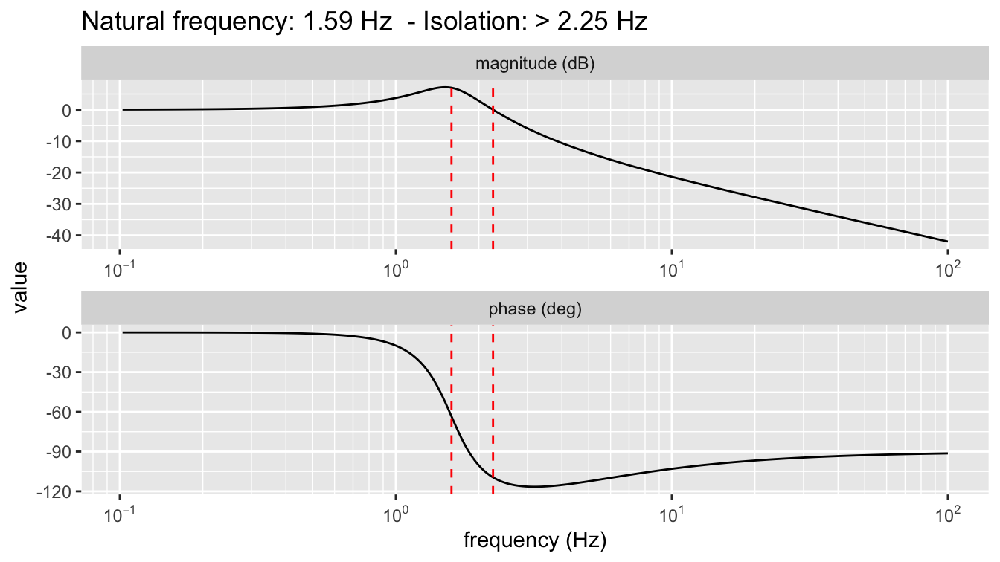
Decibel — La magnitudine della funzione di trasferimento è espressa in decibel (dB). Un decibel corrisponde a \(10 \log_{10}(X)\). Tuttavia è d’uso scalare la magnitudine in modo che rappresenti il rapporto tra le potenze, che dipende dal quadrato della variabile in oggetto. Quindi l’effettiva relazione diventa \(20 \log_{10}(X)\).
In altre parole, un rapporto pari a 1:10 sulla variabile corrisponde a 1:100 sulla potenza; quindi se esprimo la magnitudine come \(20 \log_{10}(X)\) significa che un’attenuazione di -10 dB\(_{20}\) sul segnale corrisponde a -10 dB\(_{10}\) sulla potenza. Ancora più chiaramente: -20 dB sulla magnitudine significa un’attenuazione di 10 volte sul segnale, 100 volte sulla potenza.
Si noti che lo stesso risultato si ottiene a partire dalle equazioni della dinamica del sistema, effettuando la trasformata di Laplace \(\mathcal{L}\):
\[\begin{align} M\ddot y + C\dot y + Ky &= C\dot x + K x \\ &\downarrow \mathcal{L}\left(\frac{\mathrm{d}^nx}{\mathrm{d}t^n}\right) = s^n X(s) \\ M s^2 Y(s) + C s Y(s) + K Y(s) &= CsX(s) + KX(s) \end{align}\]
dalla quale otteniamo l’espressione per la funzione di trasferimento:
\[ H(s) = \frac{Y(s)}{X(s)} = \frac{Cs + K}{Ms^2 + Cs + K } \] che corrisponde alla Equazione 3 a meno della sostituzione \(s=i\omega\).
6.2 Esempio: accoppiamento rotativo motore-carico.
Con il metodo delle impedenze generalizzate si ottiene:
\[ H(i\omega) = \frac{1}{I_c (i\omega)^2 + Ci\omega + K} = \frac{1}{I_c/K (i\omega)^2 + C/K i\omega + 1} \]
La frequenza naturale può essere ottenuta con la funzione control::damp(), campo omega:
Ic <- 10e-3
K <- 5000
C <- 1
H <- tf(1,c(Ic/K, C/K, 1))
H.d <- damp(H, doPrint=FALSE)
H %>%
ggbodeplot(fmin=10, fmax=1e4) +
geom_vline(xintercept=c(1, sqrt(2)) * H.d$omega[1]/(2*pi), color="red", linetype=2) +
labs(title=paste(
"Natural frequency:", round(f0, 2), "Hz",
" - Isolation: >", round(sqrt(2)*f0, 2), "Hz"))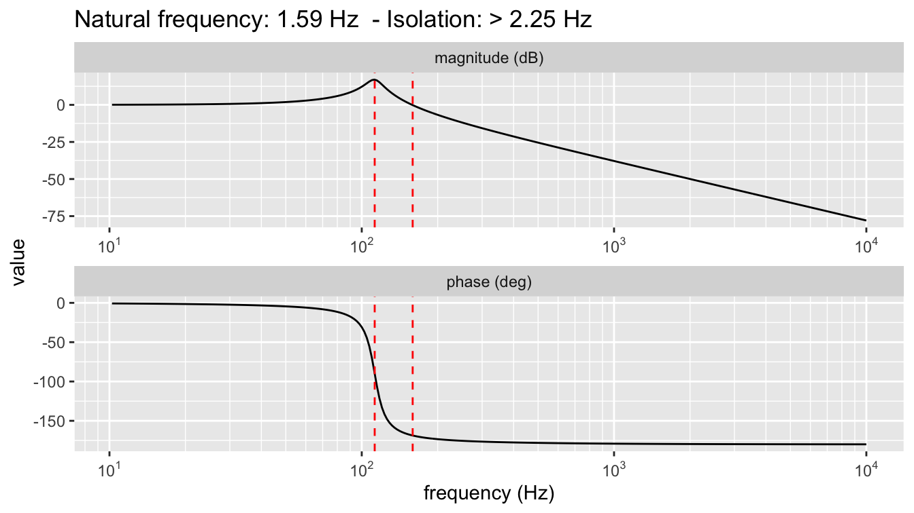